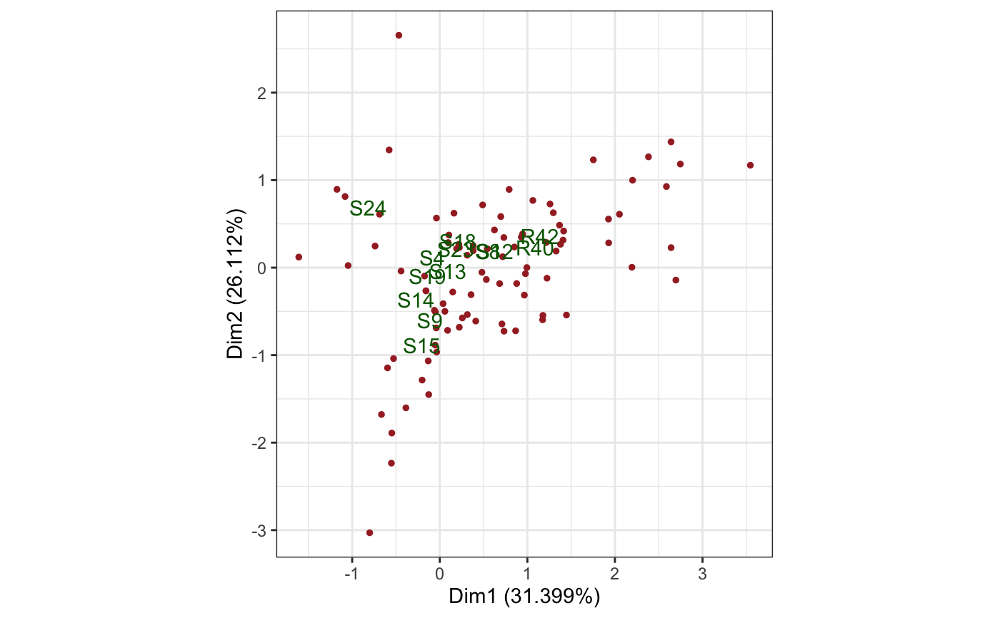
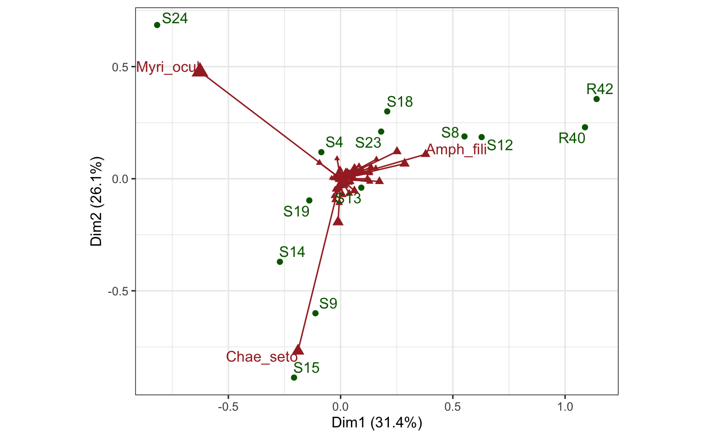
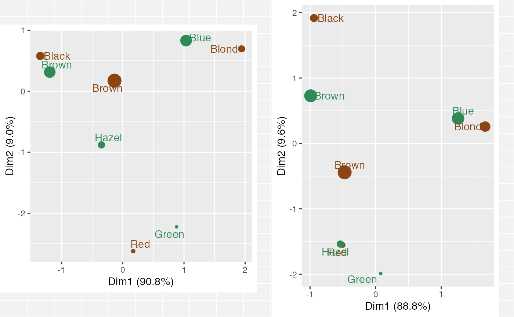
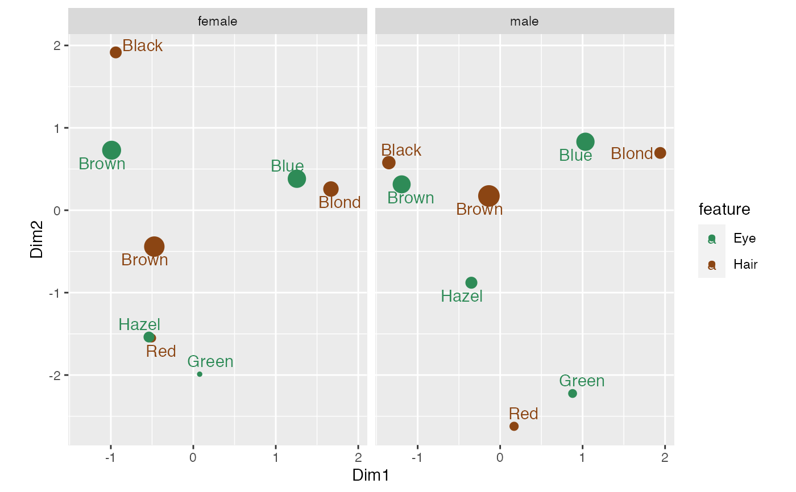
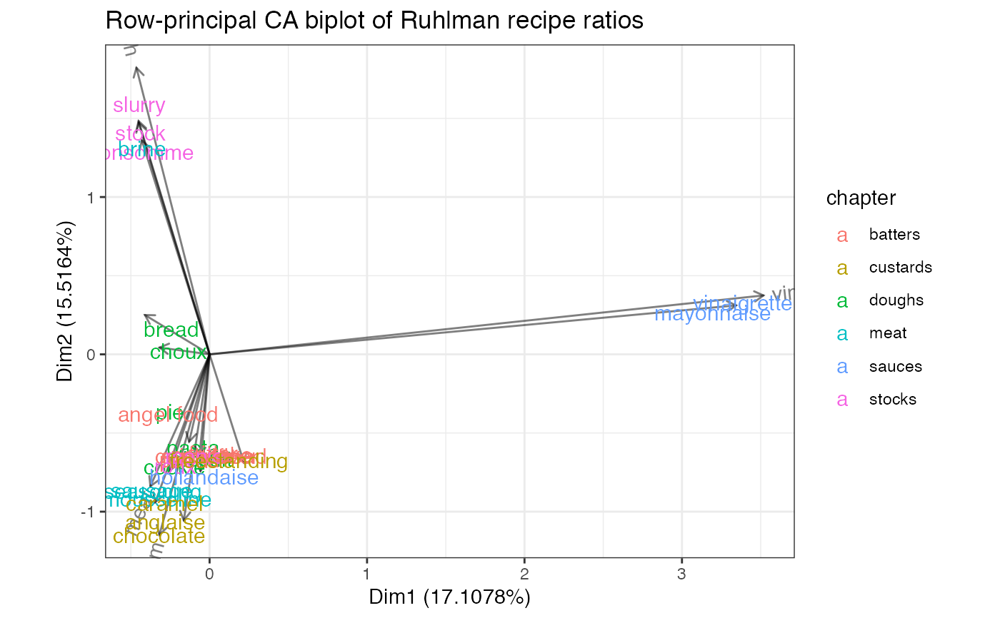

Functionality for correspondence analysis ('ca') objects
methods-ca.RdThese methods extract data from, and attribute new data to,
objects of class "ca" from the ca package.
# S3 method for ca as_tbl_ord(x) # S3 method for ca recover_rows(x) # S3 method for ca recover_cols(x) # S3 method for ca recover_inertia(x) # S3 method for ca recover_conference(x) # S3 method for ca recover_coord(x) # S3 method for ca augmentation_rows(x) # S3 method for ca augmentation_cols(x) # S3 method for ca augmentation_coord(x)
Arguments
| x | An ordination object. |
|---|
Examples
# Correspondence analysis of Sanderson finches data data(finches) finches %>% ca::ca() %>% as_tbl_ord() %>% confer_inertia(.5) %>% augment() %>% print() -> finches_ca#> # A tbl_ord of class 'ca': (13 x 12) x (17 x 12)' #> # 12 coordinates: Dim1, Dim2, ..., Dim12 #> # #> # Rows: [ 13 x 12 | 4 ] #> Dim1 Dim2 Dim3 ... | .name .mass .dist .inertia #> | <chr> <dbl> <dbl> <dbl> #> 1 0.165 0.685 0.320 | 1 Large groun… 0.115 0.573 0.0377 #> 2 -0.368 -0.522 0.0167 ... | 2 Medium grou… 0.107 0.489 0.0255 #> 3 0.0685 -0.743 -0.126 | 3 Small groun… 0.115 0.526 0.0317 #> 4 0.420 1.37 0.417 | 4 Sharp-beake… 0.0820 0.994 0.0810 #> 5 -0.365 -0.691 0.244 | 5 Cactus grou… 0.0984 0.608 0.0364 #> # … with 8 more rows #> # #> # Columns: [ 17 x 12 | 4 ] #> Dim1 Dim2 Dim3 ... | .name .mass .dist .inertia #> | <chr> <dbl> <dbl> <dbl> #> 1 -0.0909 -1.23 0.274 | 1 Seymour 0.0328 1.10 0.0398 #> 2 -0.0909 -1.23 0.274 ... | 2 Baltra 0.0328 1.10 0.0398 #> 3 -0.269 0.389 -0.783 | 3 Isabella 0.0902 0.657 0.0389 #> 4 -0.233 0.601 -0.933 | 4 Fernandina 0.0820 0.794 0.0517 #> 5 -0.221 0.117 -0.136 | 5 Santiago 0.0820 0.349 0.00998 #> # … with 12 more rowsfinches_ca %>% ggbiplot(aes(label = .name)) + geom_rows_text(aes(alpha = .inertia), color = "royalblue3") + geom_cols_text(aes(alpha = .inertia), color = "darkred") + scale_alpha_continuous(range = c(.3, 1), guide = "none") + ggtitle( "Symmetric CA biplot of the Galapagos island finches", "Label opacity encodes row/column inertia" ) + expand_limits(x = c(-1, 6))# Row- and column-principal biplots for CA of artificial smoking frequency data data(smoke, package = "ca") smoke %>% ca::ca() %>% as_tbl_ord() %>% print() -> smoke_ca#> # A tbl_ord of class 'ca': (5 x 3) x (4 x 3)' #> # 3 coordinates: Dim1, Dim2, Dim3 #> # #> # Rows: [ 5 x 3 | 0 ] #> Dim1 Dim2 Dim3 | #> | #> 1 -0.241 -1.94 3.49 | #> 2 0.947 -2.43 -1.66 | #> 3 -1.39 -0.107 -0.254 | #> 4 0.852 0.577 0.163 | #> 5 -0.735 0.788 -0.397 | #> # #> # Columns: [ 4 x 3 | 0 ] #> Dim1 Dim2 Dim3 | #> | #> 1 -1.44 -0.305 -0.0438 | #> 2 0.364 1.41 1.08 | #> 3 0.718 0.0735 -1.26 | #> 4 1.07 -1.98 1.29 |smoke_ca %>% confer_inertia("rowprincipal") %>% ggbiplot(aes(label = .name)) + theme_bw() + geom_rows_point(color = "green") + geom_rows_text_repel(color = "blue") + geom_cols_point(color = "brown", shape = 17) + geom_cols_text_repel(color = "brown")smoke_ca %>% confer_inertia("colprincipal") %>% ggbiplot(aes(label = .name)) + theme_bw() + geom_rows_point(color = "green") + geom_rows_text_repel(color = "blue") + geom_cols_point(color = "brown", shape = 17) + geom_cols_text_repel(color = "brown")# Confer inertia in CA between rows and columns of benthic sample data data(benthos) benthos %>% ca::ca() %>% as_tbl_ord() %>% print() -> benthos_ca#> # A tbl_ord of class 'ca': (92 x 12) x (13 x 12)' #> # 12 coordinates: Dim1, Dim2, ..., Dim12 #> # #> # Rows: [ 92 x 12 | 0 ] #> Dim1 Dim2 Dim3 ... | #> | #> 1 -1.17 0.895 -0.140 | #> 2 -0.552 -2.23 -0.359 ... | #> 3 -0.0406 -0.689 0.687 | #> 4 1.22 0.287 -0.700 | #> 5 0.312 0.142 -0.137 | #> #> # #> # Columns: [ 13 x 12 | 0 ] #> Dim1 Dim2 Dim3 ... | #> | #> 1 -0.173 0.262 -0.376 | #> 2 1.11 0.417 1.52 ... | #> 3 -0.226 -1.33 -0.297 | #> 4 1.27 0.411 1.37 | #> 5 0.186 -0.0884 0.568 | #># Reproduce Exhibit 8.3 benthos_ca %>% confer_inertia("colprincipal") %>% ggbiplot(aes(label = .name)) + theme_bw() + geom_rows_point(color = "brown", size = 1) + geom_cols_text(color = "darkgreen")# Reproduce Exhibit 8.4 benthos_ca %>% augment(.matrix = "rows") %>% transmute_rows(mass = .mass, sqrt_mass = sqrt(.mass)) %>% confer_inertia("colprincipal") %>% ggbiplot(aes(label = .name), scale_rows = "sqrt_mass") + theme_bw() + geom_rows_vector(color = "brown", arrow = NULL) + geom_rows_point(aes(size = mass), color = "brown", shape = 17) + scale_size_continuous(range = c(1, 4), guide = "none") + geom_rows_text( stat = "chull", color = "brown", hjust = "outward", vjust = "outward" ) + geom_cols_point(color = "darkgreen") + geom_cols_text_repel(color = "darkgreen", min.segment.length = 2)# Confer inertia between rows and columns of CA on Spanish ISSP sample data(issp_women) issp_women %>% ca::ca() %>% as_tbl_ord() %>% augment() %>% print() -> issp_ca#> # A tbl_ord of class 'ca': (23 x 22) x (39 x 22)' #> # 22 coordinates: Dim1, Dim2, ..., Dim22 #> # #> # Rows: [ 23 x 22 | 4 ] #> Dim1 Dim2 Dim3 ... | .name .mass .dist .inertia #> | <chr> <dbl> <dbl> <dbl> #> 1 0.280 0.111 0.830 | 1 m1 0.185 0.0807 0.00120 #> 2 1.64 -1.05 -1.86 ... | 2 m2 0.0272 0.413 0.00464 #> 3 -0.508 -2.84 1.14 | 3 m3 0.00712 0.321 0.000733 #> 4 -0.459 -1.23 0.0111 | 4 m4 0.0109 0.226 0.000558 #> 5 -0.850 0.403 -1.08 | 5 m5 0.103 0.214 0.00471 #> # … with 18 more rows #> # #> # Columns: [ 39 x 22 | 4 ] #> Dim1 Dim2 Dim3 ... | .name .mass .dist .inertia #> | <chr> <dbl> <dbl> <dbl> #> 1 -1.14 -0.854 -0.892 | 1 A1 0.0236 0.289 0.00197 #> 2 -0.311 1.09 -0.817 ... | 2 A2 0.0553 0.109 0.000651 #> 3 0.629 0.814 0.283 | 3 A3 0.00540 0.333 0.000598 #> 4 0.963 -0.883 1.79 | 4 A4 0.0355 0.255 0.00230 #> 5 1.25 -2.50 0.188 | 5 A5 0.00528 0.409 0.000884 #> # … with 34 more rows# Reproduce Exhibit 9.2 in Greenacre (2010)... issp_ca %>% confer_inertia(c(1, 1)) %>% ggbiplot(aes(label = .name)) + theme_bw() + geom_rows_point(color = "darkgreen") + geom_rows_text_repel(color = "darkgreen") + geom_cols_point(color = "brown", shape = 17) + geom_cols_text_repel(color = "brown")#> Warning: Inertias are not balanced.# Reproduce Exhibit 9.3 in Greenacre (2010)... issp_ca %>% confer_inertia("rowprincipal") %>% ggbiplot(aes(label = .name)) + theme_bw() + geom_rows_point(color = "darkgreen") + geom_cols_point(color = "brown", shape = 17) + geom_cols_text_repel(color = "brown")# Reproduce Exhibits 9.4 and 9.6 in Greenacre (2010)... # Compare relative frequences of hair and eye colors among men versus women data(HairEyeColor) HairEyeColor[, , "Male"] %>% ca::ca() %>% as_tbl_ord() %>% print() -> male_haireye_ca#> # A tbl_ord of class 'ca': (4 x 3) x (4 x 3)' #> # 3 coordinates: Dim1, Dim2, Dim3 #> # #> # Rows: [ 4 x 3 | 0 ] #> Dim1 Dim2 Dim3 | #> | #> 1 -1.35 0.578 -1.35 | #> 2 -0.136 0.173 0.950 | #> 3 0.169 -2.62 -0.550 | #> 4 1.94 0.695 -0.901 | #> # #> # Columns: [ 4 x 3 | 0 ] #> Dim1 Dim2 Dim3 | #> | #> 1 -1.19 0.314 -0.567 | #> 2 1.03 0.831 0.0457 | #> 3 -0.349 -0.880 2.01 | #> 4 0.878 -2.22 -1.32 |#> # A tbl_ord of class 'ca': (4 x 3) x (4 x 3)' #> # 3 coordinates: Dim1, Dim2, Dim3 #> # #> # Rows: [ 4 x 3 | 0 ] #> Dim1 Dim2 Dim3 | #> | #> 1 -0.940 1.92 -0.683 | #> 2 -0.473 -0.441 0.878 | #> 3 -0.505 -1.55 -2.19 | #> 4 1.67 0.258 -0.111 | #> # #> # Columns: [ 4 x 3 | 0 ] #> Dim1 Dim2 Dim3 | #> | #> 1 -0.990 0.728 -0.232 | #> 2 1.26 0.382 0.149 | #> 3 -0.538 -1.54 1.77 | #> 4 0.0772 -1.99 -2.27 |# side-by-side biplots ca_biplot <- function(ord) { ggbiplot(ord, aes(label = .name, color = .matrix)) + scale_color_manual(values = c("seagreen4", "saddlebrown")) + geom_rows_point(aes(size = .mass)) + geom_cols_point(aes(size = .mass)) + geom_rows_text_repel() + geom_cols_text_repel() + guides(color = "none", size = "none") } plot(gridExtra::arrangeGrob(grobs = list( ca_biplot(female_haireye_ca), ca_biplot(male_haireye_ca) ), ncol = 2))# faceted biplots dplyr::bind_rows( dplyr::mutate(fortify(male_haireye_ca), sex = "male"), dplyr::mutate(fortify(female_haireye_ca), sex = "female") ) %>% dplyr::mutate(feature = ifelse(.matrix == "rows", "Hair", "Eye")) %>% ggplot(aes(x = Dim1, y = Dim2, label = .name, color = feature)) + facet_wrap(~ sex) + scale_color_manual(values = c("seagreen4", "saddlebrown")) + coord_equal() + geom_point(aes(size = .mass)) + geom_text_repel() + guides(size = "none")# Correspondence analysis of Ruhlman's recipe ratios data(ratios) ratios %>% dplyr::select(-chapter) %>% tibble::column_to_rownames("recipe") %>% dplyr::select(-chocolate) %>% ca::ca() %>% as_tbl_ord() %>% augment() %>% mutate_rows(recipe = .name, chapter = ratios$chapter) %>% mutate_cols(ingredient = .name) %>% print() -> ratios_ca#> # A tbl_ord of class 'ca': (31 x 16) x (17 x 16)' #> # 16 coordinates: Dim1, Dim2, ..., Dim16 #> # #> # Rows: [ 31 x 16 | 6 ] #> Dim1 Dim2 Dim3 ... | .name .mass .dist .inertia recipe #> | <chr> <dbl> <dbl> <dbl> <chr> #> 1 -0.247 0.175 0.796 | 1 bread 0.0265 1.75 0.0811 bread #> 2 -0.106 -0.633 1.45 ... | 2 pasta 0.0166 2.37 0.0928 pasta #> 3 -0.257 -0.390 0.236 | 3 pie 0.0199 1.48 0.0437 pie #> 4 -0.0506 -0.711 1.05 | 4 bisc… 0.0199 1.84 0.0672 biscu… #> 5 -0.227 -0.765 0.377 | 5 cook… 0.0199 1.81 0.0650 cookie #> # … with 26 more rows, and 1 more #> # Rows: [ 31 x 16 | 6 ]# variable: chapter <chr> #> # #> # Columns: [ 17 x 16 | 5 ] #> Dim1 Dim2 Dim3 ... | .name .mass .dist .inertia #> | <chr> <dbl> <dbl> <dbl> #> 1 -0.130 -0.555 1.17 | 1 flour 0.114 1.74 0.345 #> 2 -0.430 1.36 -0.0386 ... | 2 water 0.219 1.41 0.437 #> 3 -0.0643 -0.646 1.50 | 3 egg 0.0464 2.21 0.227 #> 4 -0.346 -0.941 -1.10 | 4 fat 0.126 1.62 0.330 #> 5 0.219 -0.690 1.64 | 5 liqu… 0.0563 2.40 0.323 #> # … with 12 more rows, and 1 more #> # Columns: [ 17 x 16 | 5 ]# variable: ingredient <chr>ratios_ca %>% confer_inertia("rowprincipal") %>% ggbiplot() + theme_bw() + geom_cols_vector(alpha = .5) + stat_cols_chull(geom = "text_radiate", aes(label = ingredient), alpha = .5) + geom_rows_text(aes(label = recipe, color = chapter), size = 4) + ggtitle("Row-principal CA biplot of Ruhlman recipe ratios")